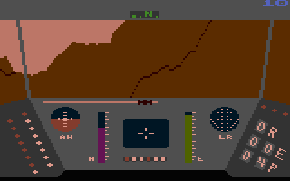

LUCASFILM GAMES · ATARI XL/XE
← VŠECHNY HRY
ATARI800 · WEBOVÁ HERNA
1985 · ZÁCHRANNÁ MISE
Rescue on Fractalus
!
Mezi horami nejsi sám.
VALKYRIE · STAND BY
ATARI XL/XE · HTML5

PAUZA
▶ Pokračovat
Zkusit znovu →
Úroveň
Přehrát úvod
Odstartovat →
Přeskočit úvod · Enter / mezerník →
↺ Znovu · R
Ⅱ Pauza · P
♫ Zvuk zapnutý
⛶ Celá obrazovka · F
＋
Tah
−
Tah
L · Přistát
S · Systémy
A · Průlez
B · Návrat